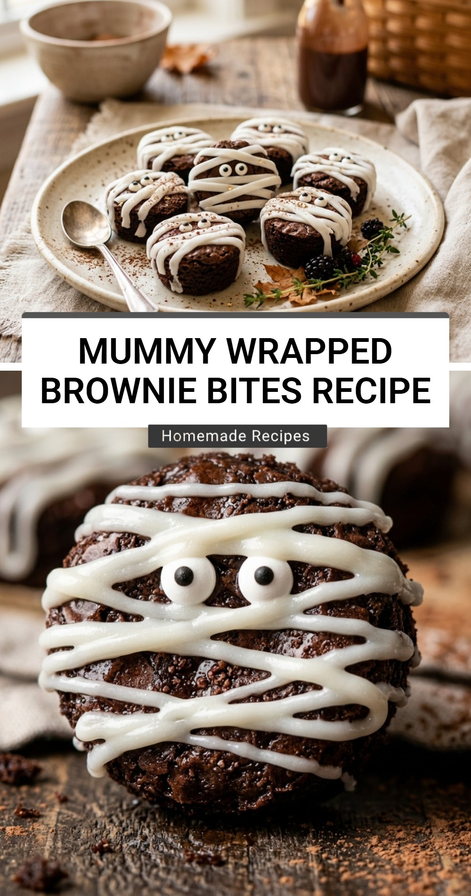

Mummy Wrapped Brownie Bites Recipe

Get ready to add a touch of spooky charm to your Halloween dessert table with these adorable Mummy Wrapped Brownie Bites. These treats are the perfect combination of rich, fudgy chocolate and a festive, playful design that kids and adults alike will adore. Whether you are hosting a costume party or just looking for a fun weekend activity with the family, these bite-sized brownies are sure to be a hit.
Recipe Information
Prep Time: 15 minutes
Cook Time: 20 minutes
Total Time: 35 minutes
Servings: 24 bites
Difficulty Level: Easy
Nutrition Information
Calories per serving: 145 kcal
Protein: 2g
Carbohydrates: 19g
Fat: 7g
Fiber: 1g
Sugar: 14g
Sodium: 90mg